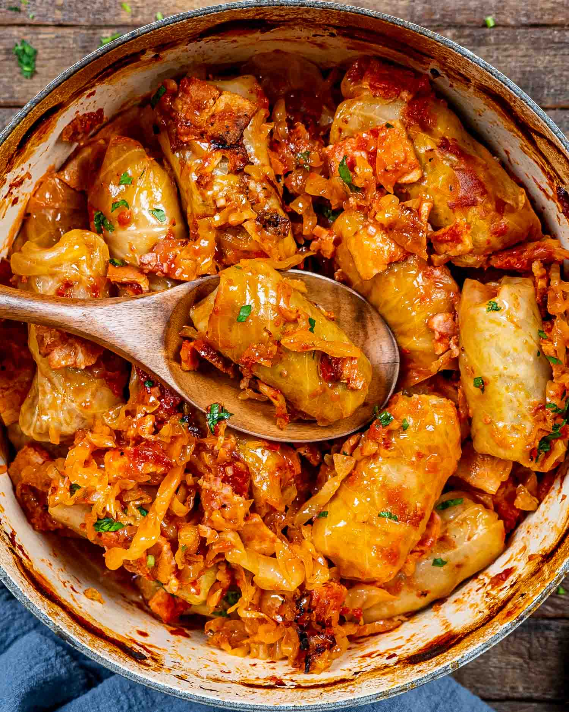

Sarmale

Sarmale are Romanian stuffed cabbage rolls traditionally served on Christmas and New Year's Eve but also served throughout the year.
Ingredients
- 500g - Ground pork
- 1 whole head cabbage, about 4 pounds
- 6 tablespoons olive oil, divided
- 2 medium onion, finely chopped
- 2 cloves garlic, minced
- 2 1/2 tablespoons raw rice
- 6 tablespoons hot water, divided
- 1 slice white bread, crusts removed
- 2 tablespoons finely chopped fresh dill
- 1 teaspoon fresh thyme
- 2 teaspoons salt
- 1 teaspoon freshly ground black pepper
- 1 teaspoon crushed red pepper, optional